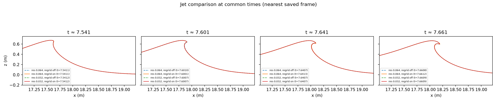
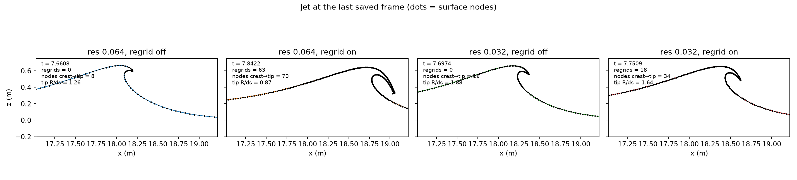
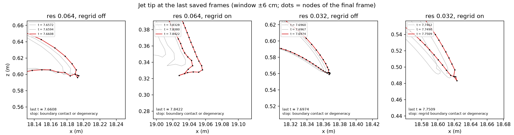
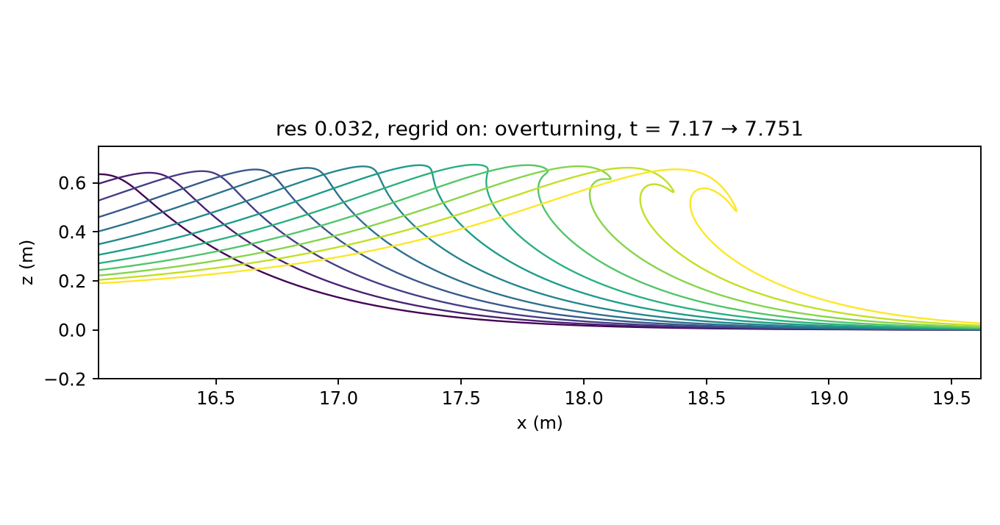
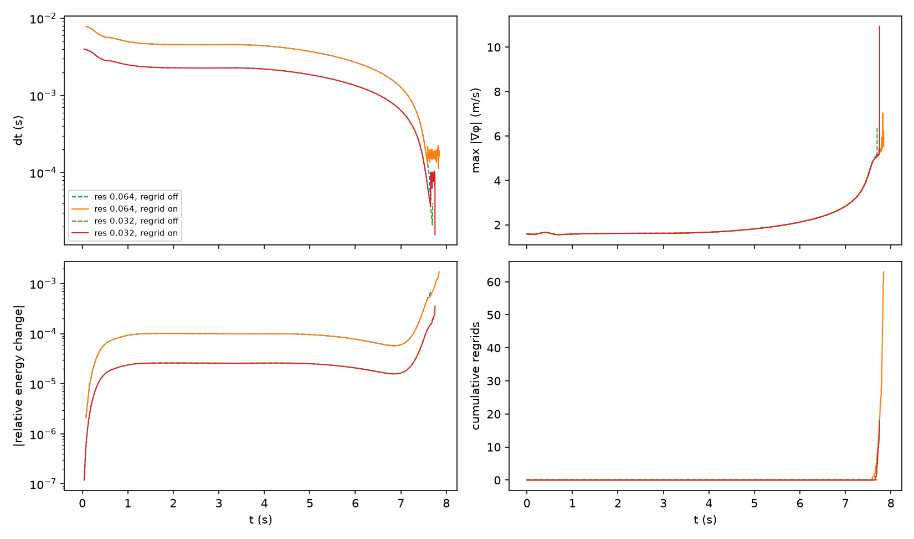
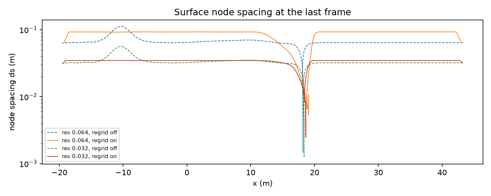
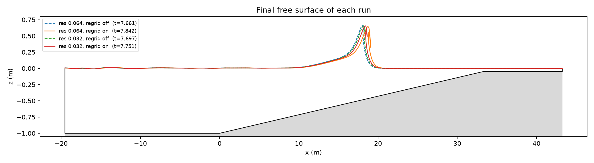

Surftank BEM · Aidan_shallow variant · 24 November 2026
a0 = 0.5 on a 1:35 slope: the jet tip breaks down before touchdown
This repeats the a0 = 0.6, 1:10 comparison with a smaller solitary wave (a0/H = 0.5, H = 1 m), a gentler 1:35 slope onto the same 0.05 m shelf, and CFL 0.2 instead of 0.1. The same four runs cross free-surface resolution 0.064 / 0.032 m with free-surface regridding off or on.
Two-dimensional potential-flow BEM. All runs ran on Unity with 16 OpenMP threads. Both vertical walls are respaced every step. Regridding settings are as before: shift_by_curve2d_normu, a = 16, thresholds 10 / 1.5, buffer 10.
Short answer
- The wave overturns on the slope. The front face passes vertical at t ≈ 7.51 s, at x ≈ 17.6 m, where the still-water depth is about 0.50 m. The crest stands about 0.66 m above still water.
- Up to t ≈ 7.66 s all four runs agree. At plot scale, resolution and regridding make no visible difference to the overturning crest.
- No run reaches touchdown. The jet is a sheet about 1 cm thick at its end. In every run its tip crumples into a millimetre-scale sawtooth, and adjacent panels then cross. When the runs stop, the tip is still 0.3–0.6 m above the water. The tip radius of curvature is only 0.9–1.9 node spacings in all runs.
- Each run fails at a different stage, so the jet after t ≈ 7.66 s is not converged. The runs stop at t = 7.661, 7.697, 7.751 and 7.842 s, with overhangs of 0.15–0.34 m. A longer-lived run here does not mean a more accurate jet.
- Regridding delays the breakdown; it does not prevent it. At 0.064 m it carries the jet furthest, to t = 7.842 s with a 0.34 m overhang, but needs 63 regrids and the time step becomes noisy. At 0.032 m it adds 0.05 s over the unregridded run, then fails during a regrid.
- Compared with a0 = 0.6 on 1:10: that case reached touchdown with a converged jet path. Here the jet is thinner and the tip sharper. Because CFL also changed (0.1 → 0.2), this comparison cannot separate the effect of the wave and slope from the effect of the larger time step.
Runs
| Run | Surface nodes | Final t (s) | Regrids | Overhang (m) | Nodes crest→tip | Jet spacing median / max (m) | Tip R (m) | R / local spacing | Rel. energy drift | Wall time |
|---|---|---|---|---|---|---|---|---|---|---|
| 0.064 m, regrid off | 981 | 7.6608 | 0 | 0.145 | 8 | 0.021 / 0.030 | 0.0091 | 1.3 | 7.6e-4 | 4 min |
| 0.064 m, regrid on | 981 | 7.8422 | 63 | 0.336 | 70 | 0.007 / 0.009 | 0.0047 | 0.9 | 1.7e-3 | 9 min |
| 0.032 m, regrid off | 1962 | 7.6974 | 0 | 0.197 | 19 | 0.013 / 0.019 | 0.0067 | 1.9 | 2.0e-4 | 52 min |
| 0.032 m, regrid on | 1962 | 7.7509 | 18 | 0.242 | 34 | 0.009 / 0.011 | 0.0132 | 1.6 | 3.6e-4 | 44 min |
All four runs first overturn at t ≈ 7.51 s. Before breaking, energy drift plateaus at about 1.0 × 10−4 at 0.064 m and 2.6 × 10−5 at 0.032 m. Relative volume change is below 3.1 × 10−5 in every run. Runs were on different Unity node types, so wall times are indicative only.
The overturning crest



Evolution and run diagnostics




What would settle it
Three runs would separate the remaining effects:
- The 0.032 m regridded run at CFL 0.1. This separates the time step from the wave and slope.
- Stronger regridding at 0.032 m, so more nodes sit in the tip: larger a, or a lower local threshold.
- 0.016 m resolution. This costs roughly 8–16× the 0.032 m run.
Upstream surftank has no smoothing or filtering of the free surface, and none is used here.
Method and caveats
The solver and regridding are the same Fortran port as on the a0 = 0.6 page, which describes the method and its caveats. The overturn is detected when the front face passes vertical. The tip is the first forward-most node beyond the crest. R is the circumradius through the tip node and its two neighbours, so for a crumpled tip it is a rough indicator only.
Plots: analyze_jets.py, tip_closeup.py · numbers: summary.json. Raw surface histories stay on Unity.